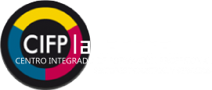

PLAN DE RECUPERACIÓN CONVOCATORIA JUNIO 2022
ACTIVIDADES DE TRABAJO UT2. MANEJO DE LA SINTAXIS DEL LENGUAJE
CIFP La Laboral Sectores Industrial y de Servicios
Tarea 1
Aplicación web para representar rombos, de forma que el
usuario puede introducir el tamaño.